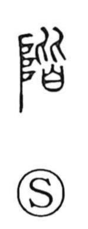

階

Uncategorized
Kun: kizahashi | On: kai
stairs ・ steps ・ floor ・ rank
Explanation
Shirakawa interprets 階 as a phono-semantic compound: 皆 provides the sound kai, while the left component 阝 (from 阜) originally depicts the ladder used by deities to ascend and descend. He further sees 皆 as the orderly ranks of spirits coming down in answer to prayer, so the earliest meaning of 階 is the stairway prepared for the gods’ descent from heaven. In ritual settings, altars were raised on earthen platforms, with clay steps built in front; from this context the character came to mean steps and staircases in general, and later extended to graded levels such as social rank, as in 階級.